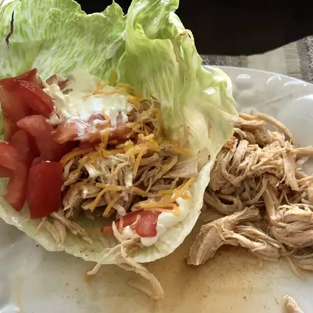

Fiesta Slow Cooker Sheedded Chicken Tacos

Description
This chicken tacos recipe is easy to make in a slow cooker. Spoon the filling into warm tortillas for a very tasty meal.
Ingredients
- 1 cup chicken broth
- 3 tablespoons taco seasoning mix
- 1 poud skinless, boneless chicken breasts
Pasos
- Combine chicken broth and taco seasoning mix in a bowl
- Place chicken in a slow cooker. Pour chicken broth mixture over chicken
- Cook on Low for 6 to 8 hours. Shred chicken